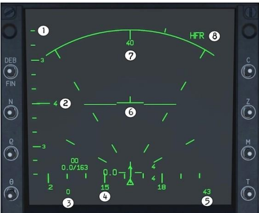

Le Radar RDI
Présentation
Le Mirage 2000C est équipé du radar RDI (Radar Doppler à Impulsion) qui permet la détection et le suivi des cibles aériennes.
Visualisation tête basse, écran Radar. (HDD)
- 1. ÉLÉVATION DE L'ANTENNE RADAR. Indique l'angle d'élévation de l'antenne vers le haut ouvers le bas. Chaque petite barre représente 10°.
- 2. COUVERTURE DE BALAYAGE VERTICAL DU RADAR (BARRES). Indique les réglages du nombre de barres choisis sur le SÉLECTEUR DE BARRES (1, 2 ou 4 lignes). Le repère à gauche du numéro se déplacera vers le haut ou vers le bas le long de l'échelle d'élévation de l'antenne radar, montrant l'angle actuel de l'antenne. notez que lors du réglage une barre, il n'y a pas de numéro, seulement le repère horizontal sur l'échelle d'élévation.
- 3. VITESSE CONVENTIONNELLE. Indique la CAS en nœuds et en Mach en dessous (nonvisible sur cette capture d'écran).
- 4. ÉCHELLE DE CAP. Semblable à celle de la VTH, indique le cap actuel de l'avion. Chaque barre verticale représente 10°, les nombres (12, 15, 18) indiquent le cap (120, 50, 80).
- 5. ALTITUDE BAROMÉTRIQUE. Indique l'altitude barométrique actuelle de l'avion (3 chiffres au format xxx, dans ce cas 043 - 43o0 pieds).
- 6. SYMBOLE ET ASSIETTE DE L'AVION. Le symbole au milieu est statique et représente votre avion, tandis que les deux longues lignes horizontales bougent pour représenter le roulis et le tangage instantané de l'avion.
- 7. DISTANCE DE BALAYAGE RADAR. Indique la portée en nautiques actuellement couverte sur l'écran, réglée par L'INTERRUPTEUR DE PORTÉE RADAR.
- 8. FRÉQUENCE DE RÉPÉTITION DES IMPULSIONS. Affiche le mode de fonctionnement actuel du radar, déterminé par la position du COMMUTATEUR DE MODE RADAR. Options possibles: HFR pour haute fréquence // ENT pour entrelacé // BFR pour basse fréquence
Modes de Fonctionnement
- PSIC (Pursuit Single Target Track): Suivi d'une seule cible.
- TWS (Track While Scan): Suivi de plusieurs cibles simultanément.
- RWS (Range While Scan): Recherche de cibles sur une large zone.
- Vertical Scan: Utilisé en combat rapproché.
- Boresight Mode: Verrouillage rapide d'une cible devant l'appareil.
Utilisation en Combat
Le radar RDI est un élément clé pour l'engagement des cibles à moyenne et longue distance. Son utilisation optimale repose sur :
- La sélection du bon mode selon la situation.
- La gestion de l’antenne radar pour maximiser la couverture.
- L’interprétation des symboles radar affichés sur le HUD et le RWR.